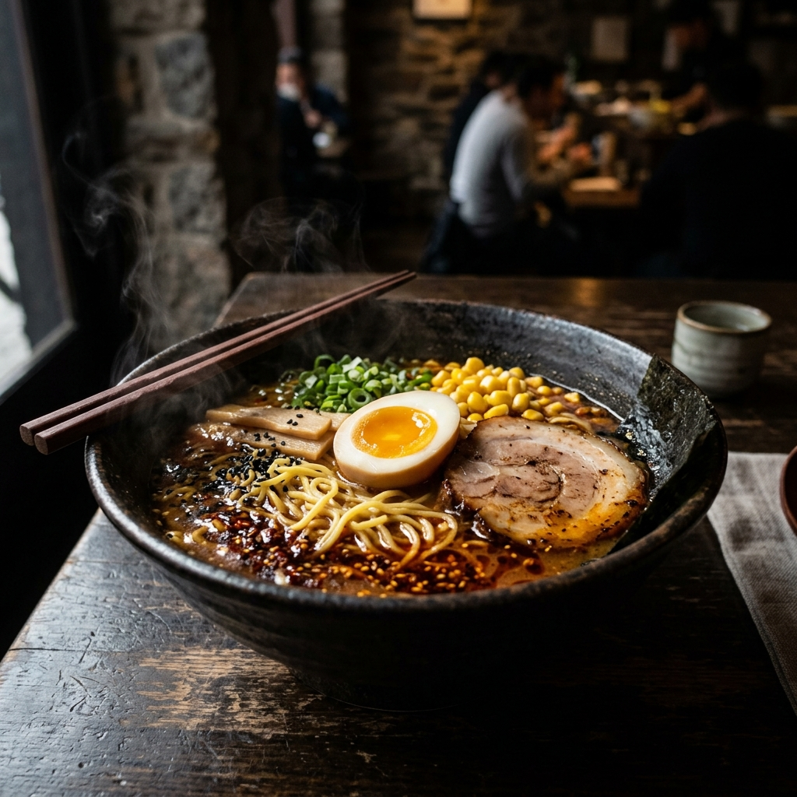

Description
A deeply savory, spicy broth loaded with springy noodles, a soft-boiled egg, chashu pork, and vibrant toppings. This weeknight version delivers serious ramen-shop flavor without an all-day cook.
Ingredients
- 4 cups chicken or pork broth
- 2 tbsp white miso paste
- 1 tbsp soy sauce
- 1 tbsp gochujang (Korean chili paste)
- 1 tbsp sesame oil
- 3 cloves garlic, minced
- 1 tsp fresh ginger, grated
- 200g fresh ramen noodles (or dried)
- 2 large eggs
- 100g pork belly slices or chashu pork
- 2 scallions, sliced
- 1 sheet nori, halved
- Corn kernels, bamboo shoots, and bean sprouts (optional toppings)
- 1 tbsp butter
- Sesame seeds, to garnish
Instructions
- Soft-boil eggs: bring water to a boil, gently lower eggs in, cook for exactly 6.5 minutes. Transfer to ice water, peel, and halve.
- In a saucepan over medium heat, sauté garlic and ginger in sesame oil for 1 minute. Add gochujang and cook for another minute.
- Add broth and bring to a simmer. Whisk in miso paste and soy sauce. Don't boil after adding miso. Keep warm.
- Cook noodles according to package directions. Drain.
- Pan-fry pork belly slices until caramelized, about 2–3 minutes per side.
- Divide noodles between two deep bowls. Ladle hot broth over each. Arrange pork, egg halves, scallions, nori, and your chosen toppings.
- Add a small knob of butter to each bowl. Sprinkle with sesame seeds and serve immediately.